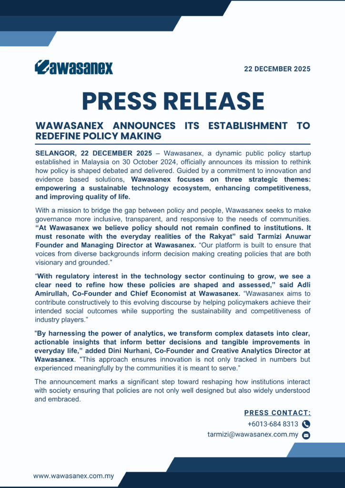

SELANGOR, 22 DECEMBER 2025 – Wawasanex, a dynamic public policy startup established in Malaysia on 30 October 2024, officially announces its mission to rethink how policy is shaped debated and delivered. Guided by a commitment to innovation and evidence based solutions, Wawasanex focuses on three strategic themes: empowering a sustainable technology ecosystem, enhancing competitiveness, and improving quality of life.
With a mission to bridge the gap between policy and people, Wawasanex seeks to make governance more inclusive, transparent, and responsive to the needs of communities. “At Wawasanex we believe policy should not remain confined to institutions. It must resonate with the everyday realities of the Rakyat” said Tarmizi Anuwar Founder and Managing Director at Wawasanex. “Our platform is built to ensure that voices from diverse backgrounds inform decision making creating policies that are both visionary and grounded.”
“With regulatory interest in the technology sector continuing to grow, we see a clear need to refine how these policies are shaped and assessed,” said Adli Amirullah, Co-Founder and Chief Economist at Wawasanex. “Wawasanex aims to contribute constructively to this evolving discourse by helping policymakers achieve their intended social outcomes while supporting the sustainability and competitiveness of industry players.”
"By harnessing the power of analytics, we transform complex datasets into clear, actionable insights that inform better decisions and tangible improvements in everyday life,” added Dini Nurhani, Co‑Founder and Creative Analytics Director at Wawasanex. "This approach ensures innovation is not only tracked in numbers but experienced meaningfully by the communities it is meant to serve.”
The announcement marks a significant step toward reshaping how institutions interact with society ensuring that policies are not only well designed but also widely understood and embraced.